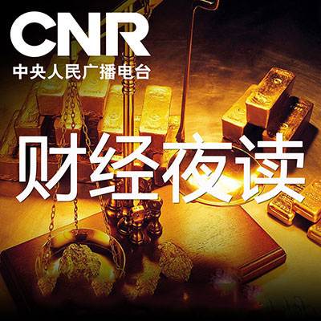

--:--
--:--



财经夜读
 播主：经济之声
播主：经济之声财经夜读是经济之声重点打造的夜间阅读节目，选取财富人物的最新报道、新锐商业传奇、借鉴性较强的创业故事、温暖质朴的亲情故事、鼓励人生的励志故事等，设置“读热点”、“读心灵”、“读新知”“读原创”等栏目，与多家出版社、杂志社合作，努力打造内容丰富的有声版时尚财经杂志，以轻松温馨的方式启迪听者、感动听者。周末设置特别版读书时间，选取最新出版的精品图书，以作者访谈、精彩段落选读等方式推荐给听者。
- 2016-12-06别担心地球会在你不收邮件的时候爆炸
- 2016-12-06毕淑敏：兴趣就像食物
- 2016-12-06胡雪岩为人撑伞的故事
- 2016-12-06什么表情让你在开会时受益
- 2016-12-06拖延是怎么回事？
- 2016-12-06弯下腰，捡起你的尊严
- 2016-12-06周杰伦：你可以不平凡
- 2016-12-06黄小厨：黄磊自品牌的电商梦
- 2016-12-06烹调是孩子必备的生存技能
- 2016-12-06热豆腐，家的感觉
- 2016-12-06上海部分单位实行冬令上班制
- 2016-12-06长大后我就成了你的升级版
- 2016-12-06细致而微
- 2016-12-06你能掌控自己的生活吗
- 2016-12-05股神巴菲特的穷儿子
- 2016-12-05读书与恋爱
- 2016-12-05赚钱的辩证法
- 2016-12-05朱光潜：谈休息
- 2016-12-05为什么等待如此痛苦
- 2016-12-05去市场散散步
- 2016-12-05老金的煎饼情缘
- 2016-12-05餐馆如何让你吃得少花得多
- 2016-12-03马修·托马斯《不属于我们的世纪》
- 2016-12-03马修·托马斯《不属于我们的世纪》
- 2016-12-03马修·托马斯《不属于我们的世纪》
- 2016-12-01孩子说谎你慌了吗
- 2016-12-01老板，你为什么不幸福
- 2016-12-01凛冬将至，愿你的生活有热汤
- 2016-12-01我们为什么担心体重
- 2016-12-01杨绛：流浪儿
- 2016-12-01养女儿，穷养富养不如书养
- 2016-12-01登上珠峰，你究竟会看到什么？
- 2016-12-01孩子，我们该如何度过孤岛上的一生
- 2016-12-01生活中容易获得却也容易被我们忽视的美好
- 2016-12-01会挣钱的女人到底什么样？
- 2016-12-01和导演李安的一顿饭
- 2016-12-01明星演员跳槽公司高管，这样的跨界靠谱吗？
- 2016-11-30京城最后一位修笔匠
- 2016-11-30美特斯邦威换帅的那些事儿
- 2016-11-30你的房间就像你自己
- 2016-11-30你以为做不到的事，别人做到了
- 2016-11-29她仅存活了74分钟，只为救人
- 2016-11-29济南的秋天
- 2016-11-29有一种爱，叫做我给你包饺子
- 2016-11-29为什么公司政治是无法避免的？
- 2016-11-29孩子，只愿你成为幸福的普通人
- 2016-11-29梅耶·马斯克：即使白发苍苍，也要活得像个少女
- 2016-11-29为什么有的人网上很热情健谈，现实中却冷漠寡言？
- 2016-11-29朱自清《冬天》
- 2016-11-29衣服无数件，爱人只一个
- 2016-11-29什么样的人能被称为沟通高手
- 2016-11-29品质是工匠的脸面
- 2016-11-29下一个代言人该找谁？
- 2016-11-29今天一定要过好，因为明天会更老
- 2016-11-2912岁暖男的一千个泰迪熊
- 2016-11-29曹萍波：白蜡黄了
- 2016-11-29渡边和子：我不允许你快乐
- 2016-11-29那些古怪又让人忧心的问题
- 2016-11-29你只是“喜悦”，但并不“愉悦”
- 2016-11-29致命药瘾：戒烟
- 2016-11-25补偿性消费行为
- 2016-11-25名叫彼得的猫
- 2016-11-25请远离你身边只会勤奋的人
- 2016-11-25用羊皮纸练字
- 2016-11-25周黑鸭与周富裕的故事
- 2016-11-25第一流的剑手
- 2016-11-25靠谱是最低成本的社交方式
- 2016-11-25两个丑面包买出七百万
- 2016-11-25轻松生活其实很简单
- 2016-11-25如何迅速掌握核心的东西
- 2016-11-25乌镇顶级互联网饭局
- 2016-11-22工作方式到底有多重要
- 2016-11-22好人张朝阳
- 2016-11-22老舍：马宗融先生的时间观念
- 2016-11-22你必须有一个不可动摇的第一
- 2016-11-22老舍：吴组缃先生的猪
- 2016-11-22马云：未来30年属于“用好互联网技术”的人
- 2016-11-22听说你不想上班，想要成为自由职业者
- 2016-11-22他用吉他写诗
- 2016-11-22如何面对干扰
- 2016-11-22还有一些美好的事物在等着我们
- 2016-11-22不跳出舒适区，你看再多的书也不会有长进！
- 2016-11-21你的微信表情让人感觉你很有趣
- 2016-11-21拥有属于自己的四小时
- 2016-11-21不进步，是因为你搞错了练习方式
- 2016-11-21关于白菜，唯美食与爱不可辜负
- 2016-11-21你为什么总是情绪疲惫
- 2016-11-21朱自清：吃饭的调味就是过人生
- 2016-11-21职业拳击手邹市明
- 2016-11-21电视剧陷入烧钱游戏
- 2016-11-21回复别人的信息是一种修养
- 2016-11-21老舍：谈幽默
- 2016-11-21李安的电影世界
- 2016-11-18忘记他
- 2016-11-18成为愿意祝福的人
- 2016-11-18我们更喜欢纸质书绝不仅仅是依恋旧物
- 2016-11-18赫敏在地铁里丢了本书
- 2016-11-17口红效应
- 2016-11-17刘雨霖：为父亲的书拍电影
- 2016-11-17谁也不让步的吵架
- 2016-11-17爸爸的长指甲
- 2016-11-16周群飞：心是被委屈撑大的
- 2016-11-16正确认识内向性格
- 2016-11-16人应该做金子，还是当泥巴？
- 2016-11-16多读书，读好书，命运会因它改变
- 2016-11-16童话大师安徒生的故事
- 2016-11-16我被这些坚持的朋友萌到了
- 2016-11-15张幼仪的传奇人生
- 2016-11-15《坦然的心最美》余秋雨
- 2016-11-15一箭双雕
- 2016-11-15杨绛眼中的生活，婚姻
- 2016-11-15宽容是为别人打开一道门，为自己打开一扇窗
- 2016-11-15空巢青年是个伪命题
- 2016-11-15坦然的心最美
- 2016-11-14陆苏：梨木妆台
- 2016-11-14朱婷 ：草根天才与第一主攻
- 2016-11-14谈效率：人人可以一石二鸟
- 2016-11-10不要错把兴趣当能力
- 2016-11-10民国女作家苏青
- 2016-11-10礼物也会凉
- 2016-11-10爱到深处是笨拙
- 2016-11-08废品站里淘出古老的厦门味道
- 2016-11-08有一种修养叫看透而不说透
- 2016-11-08人的情绪
- 2016-11-08要变得有趣，首先要戒懒
- 2016-11-08马尔克斯的前半生
- 2016-11-08和优秀的人在一起就真的越来越优秀
- 2016-11-08成熟是一种明亮而不刺眼的光辉
- 2016-11-08爱自己从好好吃饭开始
- 2016-11-08那时候我也收到这样一封信就好了
- 2016-11-08你有多久没写信了
- 2016-11-08席慕蓉：这一生最重要的五个人
- 2016-11-08幸福的婚姻要离开对父母的依赖
- 2016-11-04朱光潜：要有悲剧，才能算人生
- 2016-11-04你最该珍惜的是时间
- 2016-11-03如果父母和你谈钱
- 2016-11-03不成功是因为你做的事太多
- 2016-11-02最浪漫的事，就是和你一起变老
- 2016-11-02活得有趣不如活得认真
- 2016-11-02声律启蒙
- 2016-11-02如何改善职场人际关系？
- 2016-11-02你过得不好，真的不是因为穷
- 2016-11-02你是否会用微信聊天？
- 2016-11-01女强是活着的基本素质
- 2016-11-01这个68岁的女孩
- 2016-11-01为什么他网上很热情，现实却冷漠
- 2016-11-01睫毛的秘密花园
- 2016-11-01为什么你休假越休越累
- 2016-11-01一个善念躲过的危险
- 2016-11-01毕淑敏：我是怎么选书的
- 2016-11-01我们用假期逃离的，应是原来那懈怠的生活
- 2016-10-29坚持的力量
- 2016-10-29赵雅芝的不老传奇
- 2016-10-28父母的朋友圈
- 2016-10-28景海鹏：飞得最多最久最高
- 2016-10-27能用钱解决的事情尽量不用人情
- 2016-10-27张家玮：故乡于你
- 2016-10-26好的婚姻看厨房
- 2016-10-26混乱让生活更美好
- 2016-10-26《有点意思》李思思
- 2016-10-26一颗受伤的树
- 2016-10-26张继科——是魔王也是战士
- 2016-10-26你购物车里的东西，能看出你是否有趣
- 2016-10-2630天的坚持
- 2016-10-26艾米莉·海德伦追求简化的生活
- 2016-10-26这世界上所有的美好都源于专注
- 2016-10-26乐视生态尝试美国“游学”
- 2016-10-26移动互联网带来的颠覆与创新
- 2016-10-26不要放弃自己人生的投票权
- 2016-10-26婚姻不能给你的，梦想可以
- 2016-10-26你连“普通”都做不好，你还指望能"成功"...
- 2016-10-26杀死旅行的四个关键词
- 2016-10-26好的婚姻，看厨房
- 2016-10-26有多久，没和家人一起吃饭了呢？
- 2016-10-26说服一个人最好的办法
- 2016-10-26你最好离站台不太远
- 2016-10-21还有一些美好的事物在等着我们
- 2016-10-21如何应对干扰
- 2016-10-20非常人的平常爱
- 2016-10-20你说话直，我很介意
- 2016-10-19四个细节辨别靠谱之人
- 2016-10-19沈嘉柯：十年前你做过什么
- 2016-10-18兴趣越多 快乐越多
- 2016-10-18自律是一个人最尊贵的标配
- 2016-10-18做个有故事的工作人
- 2016-10-18刘松：人生可以走直线
- 2016-10-18蔡崇达《我的女神》
- 2016-10-18严歌苓《读书与美丽》
- 2016-10-18放下抱怨
- 2016-10-17特立独行的王小波
- 2016-10-17如何正确的休息
- 2016-10-17张幼仪辛酸和传奇的一生
- 2016-10-17杨绛先生的婚姻观
- 2016-10-17宽容的力量
- 2016-10-16致每一个在奋斗的空巢青年
- 2016-10-14我们是怎么坚持跑步的
- 2016-10-14刘心武：远去的风琴声
- 2016-10-14时间会证明一切
- 2016-10-14老打字机前的爱情守望
- 2016-10-14限量感动
- 2016-10-12华尔街最重要的能力
- 2016-10-12把缺点当特点，把特点当卖点
- 2016-10-11知道吗？你可能正在毁掉孩子的审美
- 2016-10-11什么该记住，什么该忘却
- 2016-10-11你怎么总是忍不住发朋友圈？
- 2016-10-11书柜——我家的背景墙
- 2016-10-11你对待工作的态度决定你的人格和气质
- 2016-10-11一个人的报社
- 2016-10-11画海的老人
- 2016-10-09一条长了12年的“大鱼”
- 2016-10-09爱默生：你的善意需要带些锋芒
- 2016-10-09婚姻的面貌因你而不同
- 2016-10-08格蕾丝传欣赏
- 2016-10-08和优秀的人一起会越来越优秀
- 2016-10-08谁还没有一点古怪有趣的情绪
- 2016-10-08你的隐忍坚持，让你与众不同
- 2016-10-08你不是想得多，而是动太少
- 2016-10-08真正伤害你的是你的解释风格
- 2016-10-05职场中需要怎样的管理者？
- 2016-10-05浅谈“七天快乐法”
- 2016-10-05讲得很丰满，行动很骨感
- 2016-10-04讲得很丰满，行动很骨感
- 2016-10-04浅谈“七天快乐法”
- 2016-10-04好的生命状态比选择更重要
- 2016-10-03迷人的契诃夫
- 2016-10-03“懒人”改变世界
- 2016-10-02为什么休假会越休越累？
- 2016-10-01从换头像看你的性格
- 2016-09-30毕加索和陈子昂
- 2016-09-30为何很多内向的人想改变性格
- 2016-09-29你看到我有多幸运，就有多努力
- 2016-09-29悄悄毁掉你的是退而求其次
- 2016-09-28人年轻时多读些好书有多重要
- 2016-09-28来日方长，厚积薄发
- 2016-09-28鲁迅《少年闰土》片段
- 2016-09-28工作中对方说NO，你该怎么办？
- 2016-09-27做一回久违的自己吧，十年不晚
- 2016-09-27你喜欢工作吗？
- 2016-09-27冷知识因何而冷
- 2016-09-27古稀之年的健美运动员
- 2016-09-26不要放弃自己人生的投票权
- 2016-09-26三毛：写给正怨天尤人的你
- 2016-09-26让我为你读一封旧信
- 2016-09-26我们为什么要读经典
- 2016-09-26西树：创造我的小人国
- 2016-09-26杀死旅行的四个关键词
- 2016-09-23选择之所以没选择
- 2016-09-23合不来的人，不要勉强做朋友
- 2016-09-22郭婧：治愈被孤独啃咬的同类
- 2016-09-22好身材有多重要
- 2016-09-20一个失眠者的创业故事
- 2016-09-20文章《思念》
- 2016-09-20你是不是活得像个复印机？
- 2016-09-20你知道怎样存钱吗？
- 2016-09-20常想一二
- 2016-09-19自律是一个人最尊贵的标配
- 2016-09-19翅膀断了，心也要飞
- 2016-09-19老舍《北平最美的时候》
- 2016-09-19来人间一趟，你要摘一次月亮
- 2016-09-19如何挑选适合自己的书？
- 2016-09-19吃是一种教养
- 2016-09-19让我们远离拖延症
- 2016-09-19季节与读书
- 2016-09-19孤独的卡夫卡
- 2016-09-18总爱抱怨也是一种病
- 2016-09-18做个有故事的工作人
- 2016-09-17和忧郁做朋友
- 2016-09-17你是因为热爱，还是出于目的
- 2016-09-17女神奶奶黄炎贞
- 2016-09-17在慢动作中看见自己
- 2016-09-16做最美中国嫁衣
- 2016-09-16一日一生，活在这珍贵的人间
- 2016-09-14为何我们今天还要读文学经典
- 2016-09-14你真的懂得如何读书吗
- 2016-09-14脸上的爱痕
- 2016-09-14季羡林：影响我最大的是陈寅恪
- 2016-09-13打破成规，独辟蹊径
- 2016-09-13孩子，钱有那么重要吗？
- 2016-09-13怎样做才能成为自律的人
- 2016-09-13诗意生活的爱花女孩
- 2016-09-12所有的遗憾都是成全
- 2016-09-12马克·吕布的光影人生
- 2016-09-12该怎么知道自己喜欢什么
- 2016-09-12巴菲特午餐
- 2016-09-12长期坚持做一件事是种怎样的体验
- 2016-09-12晚睡者的生活态度
- 2016-09-12你不必讨好每个人
- 2016-09-12超市，是一座城市最初的温情
- 2016-09-12你的勤奋，才是失败的真正原因
- 2016-09-12蒋晓云的传奇
- 2016-09-12大学,一场精彩的变形计
- 2016-09-12别用一个锅同时炒两个菜
- 2016-09-12微信存储空间不足，你会删除谁？
- 2016-09-12什么是对员工负责的领导
- 2016-09-12你有没有尽力自己心里最清楚
- 2016-09-12“国家级段子手”白岩松
- 2016-09-12珍惜你追求梦想的权利
- 2016-09-12最大的冒险，是不敢冒险
- 2016-09-12天才霍金的高智商家庭
- 2016-09-12越乖的孩子长大越让人操心
- 2016-09-12书柜，我家的背景墙
- 2016-09-12一个人的报社
- 2016-09-12触屏时代会给孩子带来什么
- 2016-09-11一个人的报社
- 2016-09-11画海的老人
- 2016-09-07让手账装饰你的生活
- 2016-09-05真正伤害你的是你的解释风格
- 2016-09-05简·奥斯汀的“人生地图”
- 2016-09-05你以为高情商就不是体力活吗
- 2016-09-05从心理账户、棘轮效应到荷兰病
- 2016-09-05心沉下去，生活才能满溢出来
- 2016-09-02得到的来之不易却都理所当然
- 2016-09-02我第三
- 2016-09-02迷人的契诃夫
- 2016-09-02懒人改变世界
- 2016-08-31给拒绝你的人写封感谢信
- 2016-08-31反败为胜
- 2016-08-31从辛泰尔的拒绝想开去
- 2016-08-31从来不犹豫的生活
- 2016-08-31冰心：一日的春光
- 2016-08-31郑蔓旎和她的自学游泳器
- 2016-08-31杨朔《茶花赋》
- 2016-08-31寿险界神话——柴田和子
- 2016-08-31请静心坚持一件单纯的事
- 2016-08-31保罗·欧德宁的成功哲学
- 2016-08-31乐观虽好，可不要过度哦
- 2016-08-31芝加哥大学与洛克菲勒
- 2016-08-31你存钱的能力跟你用的语言有关？
- 2016-08-31没有一眼望得到尽头的生活
- 2016-08-31好恨自己不精致
- 2016-08-31投资人 胡海泉
- 2016-08-30阿格里奇，最后的音乐女神
- 2016-08-30你有多无知，就会多坎坷
- 2016-08-30郎平，打碎一切的铁榔头
- 2016-08-30如果没有晒图，你的生活也许不曾如此正能量
- 2016-08-30工作要快，但生活要慢
- 2016-08-30收快递，真的是最佳解压方式吗？
- 2016-08-30葛优躺为什么这么火
- 2016-08-30君子一言，我定全力以赴
- 2016-08-30真正的勇敢是从创伤中重生
- 2016-08-30如何巧妙掌握分寸感
- 2016-08-30立场模糊与圆滑世故
- 2016-08-25晚上八点到十点
- 2016-08-25别扣错第一颗纽扣
- 2016-08-25职场中的体态密语
- 2016-08-25欲享光明，必先承受黑暗
- 2016-08-25现在的悲剧是未来的喜剧
- 2016-08-25明星经纪人杨思维
- 2016-08-25韩寒《常做久安，无关快慢》
- 2016-08-25毕淑敏文章《择书秘诀》
- 2016-08-23如何成功 请多睡一会儿
- 2016-08-23在平常的生活中做一个享乐主义者
- 2016-08-23安妮日记
- 2016-08-23均值回归理论
- 2016-08-23不要再“改天”了
- 2016-08-23奥运会上的世界第一超模
- 2016-08-22一份写满“失败”的治愈系简历
- 2016-08-22《人需要出走》蒋勋
- 2016-08-22你如果不能做自己，就只能做别人手里的风筝
- 2016-08-22里约奥运会上的丘索维金娜
- 2016-08-19如果不成功，你还会努力吗
- 2016-08-19不忘初心
- 2016-08-19最好的关系，是我懂你的不容易
- 2016-08-19我们该怎么开心起来
- 2016-08-19谁是你随时可以说话的人
- 2016-08-19美貌是一种表情
- 2016-08-19卖雨伞的小伙子
- 2016-08-19妈妈的时光镜像
- 2016-08-19季羡林：其实我很萌
- 2016-08-19真正的有趣，是遇见了对的人
- 2016-08-19怎样和子女谈钱
- 2016-08-19自律的人生才自由
- 2016-08-19享乐适应症
- 2016-08-19汪曾祺《夏天》
- 2016-08-19傅园慧，铜牌背后
- 2016-08-17好的生活真的是金钱买来的吗
- 2016-08-17炎夏猛读书的五个理由
- 2016-08-17克服拖延症
- 2016-08-17回忆青春，故事总发生在夏天
- 2016-08-17不要错把人脉当友情
- 2016-08-17我们的记忆都去哪了
- 2016-08-17我不要活成“别人都那样”
- 2016-08-17贪安稳就没有自由
- 2016-08-17生命对我足够深情
- 2016-08-17三毛《简单》
- 2016-08-17如何了解真相，消除误解
- 2016-08-17赢在百分之十
- 2016-08-17如果人人喜欢你，你的圈子得多小
- 2016-08-17卖猪肉的文科状元
- 2016-08-17林清玄《用素朴面对着素朴》
- 2016-08-17从没用过“梦想”这词
- 2016-08-17冰心《只拣儿童多处行》
- 2016-08-17嘿，你要遇到很多人哦
- 2016-08-17蒋勋《人需要出走》
- 2016-08-17精英人群为什么累
- 2016-08-17他是“奥运商业之父”
- 2016-08-17我被这些坚持的朋友萌到了
- 2016-08-17他将心迹隐入童话，你可曾读懂过
- 2016-08-17盛开在碗里的硬币
- 2016-08-17什么样的生活，才是真正的富足
- 2016-08-17读书读到什么时候才能改变命运
- 2016-08-17不能做金子，泥土也挺好
- 2016-08-16你凭什么拥有好工作
- 2016-08-16焦虑的演变
- 2016-08-16梭罗《瓦尔登湖》片段
- 2016-08-16梭罗和他的《瓦尔登湖》
- 2016-08-16有心计的试衣魔镜
- 2016-08-16我们其实害怕幸福
- 2016-08-16读书读出的十股潮流
- 2016-08-16毕加索与安装工
- 2016-08-16做一回久违的自己吧，十年不晚
- 2016-08-16一碗面而已
- 2016-08-16世间最难读懂的书其实是人
- 2016-08-16上班这件事
- 2016-08-16冷知识究竟有多冷
- 2016-08-1680岁的健美教练
- 2016-08-16笑声中的秘密
- 2016-08-16狭隘才是阻止你幸福的最大敌人
- 2016-08-16你的生活，会塑造你的容貌与气质
- 2016-08-16废柴机器人女王
- 2016-08-16发出声音永远是有用的
- 2016-08-1630岁以后，谁成了我们的敌人
- 2016-08-16最有价值的投资就是投资自己
- 2016-08-16正确的谈判方式帮你实现目标
- 2016-08-16语言能力的重要性
- 2016-08-16导演侯孝贤的戏梦人生
- 2016-08-16毕业也有“七年之痒”
- 2016-08-15梭罗《瓦尔登湖》片段
- 2016-08-15梭罗和他的《瓦尔登湖》
- 2016-08-15有心计的试衣魔镜
- 2016-08-15我们其实害怕幸福
- 2016-08-15读书读出的十股潮流
- 2016-08-15毕加索与安装工
- 2016-08-15做一回久违的自己吧，十年不晚
- 2016-08-15一碗面而已
- 2016-08-15世间最难读懂的书其实是人
- 2016-08-15上班这件事
- 2016-08-15冷知识究竟有多冷
- 2016-08-1580岁的健美教练
- 2016-08-15笑声中的秘密
- 2016-08-15狭隘才是阻止你幸福的最大敌人
- 2016-08-15你的生活，会塑造你的容貌与气质
- 2016-08-15废柴机器人女王
- 2016-08-15发出声音永远是有用的
- 2016-08-1530岁以后，谁成了我们的敌人
- 2016-08-15最有价值的投资就是投资自己
- 2016-08-15正确的谈判方式帮你实现目标
- 2016-08-15语言能力的重要性
- 2016-08-15导演侯孝贤的戏梦人生
- 2016-08-15毕业也有“七年之痒”
- 2016-08-15为何餐叉都是四个齿
- 2016-08-15师父总有一天会离开你
- 2016-08-09卡夫卡《变形记》节选
- 2016-08-09卡夫卡，一个冷静而深情的作家
- 2016-08-04张洁：这时候你才算长大
- 2016-08-04输在会得太多
- 2016-08-04什么都不做的人最累
- 2016-08-04让员工感到他的独一无二
- 2016-08-04健身让60岁的她美成40岁
- 2016-08-04别错把平台当本事
- 2016-08-04把沟通变得简要
- 2016-08-04了解企业家陈发树
- 2016-08-04简单思考的重要性
- 2016-08-04变得卓越并不难
- 2016-08-04像我那样傻的孩子
- 2016-08-04王安忆：教育的意义
- 2016-08-04生态摄影师星野道夫
- 2016-08-04生活不会一蹴而就或一帆风顺
- 2016-08-04善良是为自己留下的路标
- 2016-08-04做决定等于愉悦感
- 2016-08-04村上春树：我与幸福之间只差一只猫
- 2016-07-31为什么久坐电脑前会发胖
- 2016-07-24好的生命状态比选择更重要
- 2016-07-23世界上智商最高的家庭
- 2016-07-20读一场大学也是与一座城市的缘分
- 2016-07-19爱，以神奇的力量
- 2016-07-19无聊也可以是创造力
- 2016-07-19选择完就抱怨
- 2016-07-18消失中的实体书店
- 2016-07-18拳王阿里的传奇
- 2016-07-18取得专属于你的剧本
- 2016-07-18拒绝别人要干脆
- 2016-07-18低潮是人生最佳升值期
- 2016-07-18《寂寞是一种清福》梁实秋
- 2016-07-18J.K.罗琳的追梦路
- 2016-07-18别做没有分寸感的好人
- 2016-07-18你可以不圆滑，但必须懂世故
- 2016-07-18席慕蓉：槭树下的家
- 2016-07-18一切都是最好的安排
- 2016-07-18人类为什么喜欢沙滩
- 2016-07-18走进安妮·弗兰克的日记
- 2016-07-18我们为什么容易盲从
- 2016-07-18《安妮日记》节选-安妮·弗兰克
- 2016-07-18成人的世界讲究通情达理
- 2016-07-18痛苦莫过于才华配不上你的任性
- 2016-07-16消失中的实体书店
- 2016-07-16孤独是最好的增值期
- 2016-07-15《学问与趣味》梁实秋
- 2016-07-15给母亲的短柬
- 2016-07-15“简单生活”的实力
- 2016-07-15闲来无事不从容
- 2016-07-15弯腰捡起画笔的亨利·卢梭
- 2016-07-15生活在表层，生存在其中
- 2016-07-15生活中的趣味数学
- 2016-07-15傅斯年的幽默
- 2016-07-15熬出你的特色和专长
- 2016-07-0930岁，我们死在了朋友圈里
- 2016-07-09挑战丑角的吴彦祖
- 2016-07-08不要仗着被爱，把自己吃成胖子
- 2016-07-07日本首富孙正义
- 2016-07-07学会夸人，不怕没朋友
- 2016-07-07学会放大快乐才会拥有幸福
- 2016-07-07把缺陷变成机会
- 2016-07-07《跳槽》六六
- 2016-07-06真正的富养是父母彼此相爱
- 2016-07-05女员工非要穿高跟鞋吗？
- 2016-07-05乐高公司祖孙三代掌门人的创业故事
- 2016-07-05尊重人的最高境界
- 2016-07-05音乐家陈其钢父子
- 2016-07-05虚拟得很现实，现实得很虚拟
- 2016-07-05幸福密码
- 2016-07-05坚守梦想，准确定位
- 2016-07-05当你排除万难，开一家书店
- 2016-07-05我们为什么要读书
- 2016-07-05读书会给人好胃口
- 2016-07-05读书的用处和更好的自己
- 2016-07-05《拥有一个书架》斋藤孝
- 2016-07-05每天工作三小时
- 2016-07-04《谈生命》冰心
- 2016-07-01你总是太容易放过自己
- 2016-07-01捕捉微米与光年
- 2016-07-01《时间》沈从文
- 2016-07-01时间观决定你的人生
- 2016-07-01给微软白领上课的“的哥”
- 2016-07-01怎样过上你想要的慢生活
- 2016-07-01《文艺与木匠》老舍
- 2016-07-01德国人的餐桌文化
- 2016-07-01《时光》蒋勋
- 2016-07-01抓住机遇，制造机遇
- 2016-07-01怎样才算拥有了终生就业力
- 2016-07-01怎样才能做一个有格局的人
- 2016-07-01慢慢来才是人生那条可走的捷径
- 2016-07-01交到靠谱朋友的笨方法
- 2016-07-0115岁赚500万美元
- 2016-07-01梁实秋《如何利用零碎时间》
- 2016-07-01沈从文笔下的湘西世界
- 2016-07-01慢点走，等等生活
- 2016-07-01《一片阳光》节选-林徽因
- 2016-07-01真实的林徽因远比她的绯闻精彩
- 2016-07-01法国妈妈的教育经验
- 2016-07-01刘继荣的文章
- 2016-07-01《没有不委屈的工作》
- 2016-07-01你的原生家庭到底影响有多大
- 2016-06-30怎样才能做一个有格局的人
- 2016-06-30慢慢来才是人生那条可走的捷径
- 2016-06-30交到靠谱朋友的笨方法
- 2016-06-3015岁赚500万美元
- 2016-06-30怎样才算拥有了终生就业力
- 2016-06-28《我的世界下雪了》
- 2016-06-28《一片阳光》节选-林徽因
- 2016-06-28真实的林徽因远比她的绯闻精彩
- 2016-06-28法国妈妈的教育经验
- 2016-06-28刘继荣的文章
- 2016-06-28《没有不委屈的工作》
- 2016-06-28你的原生家庭到底影响有多大
- 2016-06-28《以物致心，做生活的粉丝》
- 2016-06-28苹果的故事
- 2016-06-25星期天忧郁症
- 2016-06-25小太阳秀兰邓波儿
- 2016-06-25《你有趣了你的生活才会有趣》
- 2016-06-22如何应对不喜欢的工作
- 2016-06-17陌生人，我在春天等你
- 2016-06-17一杯咖啡 三种价格
- 2016-06-17沃特·迪士尼：一个创业路上的勇士
- 2016-06-17上海迪士尼 准备好了吗？
- 2016-06-16" 拳王 " 阿里
- 2016-06-16如何对待不喜欢你的人？
- 2016-06-15因为纯，所以粹
- 2016-06-15怎么才算真正的有钱人？
- 2016-06-15人人都爱阿格里奇
- 2016-06-15你有多无知，就会有多坎坷
- 2016-06-15低级职位的时候怎么做
- 2016-06-15好恨自己不精致
- 2016-06-15不会投资的歌手不是好主持，原来你是这样的胡海泉
- 2016-06-15亲密关系中，我们该如何吵架
- 2016-06-13余光中-《写给未来孩子的诗》
- 2016-06-12走进郝景芳的科幻世界
- 2016-06-12职场方糖的生存方式
- 2016-06-12只要有心，生活处处皆诗意
- 2016-06-12爱与美食不可辜负
- 2016-06-12苟且与远方我们该信奉哪一个？
- 2016-06-12把握一颗珍珠的幸福
- 2016-06-12梅派艺术传人梅葆玖舞台下的故事
- 2016-06-12职场分享：费斯廷格法则
- 2016-06-12不要总拿自己跟别人比
- 2016-06-12严幼韵的传奇一生
- 2016-06-12为浪费的粮食建一座博物馆
- 2016-06-12村上春树的色彩巡礼
- 2016-06-12名人们的穿衣故事
- 2016-06-12低头的智慧
- 2016-06-08陈亚豪-《令母亲心碎的那一刻》
- 2016-06-08杨绛-《阴》
- 2016-06-08罗西-《炫耀》
- 2016-06-08沃尔特德拉梅尔-《过去的一切》
- 2016-06-06巴金-《鸟的天堂》
- 2016-06-06苏禾-《餐桌记》
- 2016-06-06名人的第一份工作：从平凡中挖掘“成功财富”
- 2016-06-03杨绛：我与钟书
- 2016-06-03老舍：文艺与木匠
- 2016-06-03六六：想拥有一个不被同情的老年，现在就要努力
- 2016-06-03海外有群 中剧迷
- 2016-06-02和马克▪扎克伯格老板一起散步?
- 2016-06-02爱本简单
- 2016-06-02滕华涛：渴望走出父亲光环
- 2016-06-02怎样获得好运气
- 2016-06-01晚来天欲雪，能否去吃面？
- 2016-06-01你生活的意义是什么？
- 2016-05-31硅谷版的“安迪”
- 2016-05-31打开双手世界才在你手中
- 2016-05-31放下你的手机
- 2016-05-27林少华：慢点走，等等生活
- 2016-05-27林少华：慢点走，等等生活
- 2016-05-27沈从文和他笔下的湘西世界
- 2016-05-27远离“负能量”朋友
- 2016-05-26幸福到底是什么模样
- 2016-05-26幸福谜底
- 2016-05-25在我成为几米之前
- 2016-05-20寂寞是最好的增值期
- 2016-05-20快餐式阅读
- 2016-05-20说话不简练，难怪被讨厌！
- 2016-05-18如果人人都喜欢你，你的圈子得多小？
- 2016-05-18如何赢在10%？
- 2016-05-17常想一二，不思八九
- 2016-05-17北岛-《时间的玫瑰》
- 2016-05-17有一件温暖的小事，叫陪你吃饭
- 2016-05-16狂人厨师，我卖最毒河豚大赚2000万
- 2016-05-16简单道理
- 2016-05-13想我时，含上一粒糖
- 2016-05-13一个优质普通人的故事
- 2016-05-10收到华尔街的聘书
- 2016-05-10胜利者往往是聋子
- 2016-05-09老舍-《我的理想家庭》节选
- 2016-05-09国际学校真的适合所有孩子和家庭吗？
- 2016-05-09我们梁家的家风，要一代代传下去
- 2016-05-09《樱桃的滋味》侯文咏
- 2016-05-06生命不留遗憾
- 2016-05-06人类的故事
- 2016-05-06共享经济的到来，哪些行业会被改变？
- 2016-05-06把咖啡渣穿到身上去
- 2016-05-05减肥为什么那么难？
- 2016-05-05李嘉诚的软实力在哪里？
- 2016-05-05如何获得有价值的智慧？
- 2016-04-29掌控人生的90%
- 2016-04-29“极限达人”陈盆滨的人生梦想
- 2016-04-29叶圣陶《藕与莼菜》
- 2016-04-22周鸿祎：创业是件“九死一生”的事情
- 2016-04-22蹇先艾《我与文学》
- 2016-04-21毛姆卖书，出奇制胜
- 2016-04-21什么样的相聚最为宝贵？
- 2016-04-21脑门拍拍，灵感快来
- 2016-04-21老舍《有了小孩以后》
- 2016-04-20马拉松里的职场哲学
- 2016-04-20抱怨世界，其实就是在抱怨自己
- 2016-04-19“温和”带给你的好处
- 2016-04-19你所不了解的科比：眼光独到的商人
- 2016-04-19蒋勋：“够了”的哲学
- 2016-04-19十毫升母爱
- 2016-04-19聊大学生微信创业 送水果货上门
- 2016-04-19奥巴马周围的80后才俊
- 2016-04-19英国航空对空闹颁终身禁飞令
- 2016-04-19马云的创业旧事
- 2016-04-19 拿破仑：不让学生上前线
- 2016-04-19当对方说“NO”时,机会就来了
- 2016-04-08柯利明：《琅琊榜》背后的大赢家
- 2016-04-08钱钟书《说笑》
- 2016-04-05开车的境界
- 2016-04-05张仲景：一剂“笑”方治好病
- 2016-04-05那时的喜欢就是这么简单
- 2016-04-05塔吉锅：快煮，慢食
- 2016-03-28成功者的细微性格
- 2016-03-28怎样做一个有趣的姑娘？
- 2016-03-28生活在别处
- 2016-03-28经历的无比珍贵
- 2016-03-28发现“小"的意义
- 2016-03-28读一本旧书，爱一个故人
- 2016-03-28疯狂的裁缝
- 2016-03-28改变谷歌的厨师长
- 2016-03-28替身演员——你不会看见我的脸
- 2016-03-28安德烈纪德《沙漠》
- 2016-03-28不要中了同事唠叨的毒
- 2016-03-28从巴比松到瓦尔登湖：简朴生活的真谛
- 2016-03-20余光中《听听那冷雨》
- 2016-03-20如何做到从月薪800到年薪40万
- 2016-03-20六分钟的读书时间
- 2016-03-20用29年换得28秒
- 2016-03-2020多年过去了，身边还是这个姑娘
- 2016-03-18父母心里的一滴水
- 2016-03-18老舍《有声电影》
- 2016-03-18人生的遗憾清单
- 2016-03-18为什么乔布斯的电影没人看
- 2016-03-18无可替代既是王者
- 2016-03-18来自压力的警告
- 2016-03-18那些年在健身房扔掉的钱
- 2016-03-18高仓健：一个时代的“大众情人”
- 2016-03-18中国留学生：我们真的不如美国人勤奋
- 2016-03-18林徽因：停留是刹那，转身是天涯
- 2016-03-18梁晓声《抵抗寂寞》
- 2016-03-18人最容易迷失的地方是人群
- 2016-03-18为什么总是在最慢的队伍？
- 2016-03-11催人上进的秘诀
- 2016-03-11清粥人生
- 2016-03-11该如何与这个世界相处
- 2016-03-11扎克伯格：不要问怎么做，要问为什么做
- 2016-03-11成功是给人看的
- 2016-03-11你不够优秀，因为你不够孤独
- 2016-03-11我不允许自己难过太久
- 2016-03-10倾听的魅力
- 2016-03-10从“哑巴"到话匣子
- 2016-03-10我们为什么要小声说话？
- 2016-03-10我贫穷，但这不能阻止我微笑？
- 2016-03-10成功是获得预期的结果
- 2016-03-06欧美人的”二手观"
- 2016-03-03你要知道你是谁
- 2016-03-03“豆子”精神
- 2016-03-03普通人周恩来的烦恼
- 2016-03-03晚来天欲雪，能否去吃面
- 2016-03-03季羡林：假如让我再上一次大学
- 2016-03-03找到生活的意义
- 2016-03-01休息胜过赚钱的意大利
- 2016-03-01如果你发现朋友圈里被人拉黑
- 2016-03-01金星：内心的骄傲终会让你浮出水面
- 2016-02-29“德国制造”凭什么“能用100年”
- 2016-02-28一个CEO的人生感言
- 2016-02-28清华兄弟“画饼”，3D打印下凡
- 2016-02-28关灯玩手机真的会患“眼癌”吗？
- 2016-02-27养房保姆和她的87个“孩子”
- 2016-02-27乔致庸的退与比尔盖茨的让
- 2016-02-27爱因斯坦的四封自荐信
- 2016-02-26电子红包摧毁了我的童年
- 2016-02-26淡定从容伴君行
- 2016-02-26去耶路撒冷寻找和平
- 2016-02-26打开心窗
- 2016-02-26钱钟书《论快乐》
- 2016-02-26什么事情应该争取第一名？
- 2016-02-26黄磊眼中的黄太太
- 2016-02-26能者多劳，说明你能还是劳？
- 2016-02-24“退可守”时也别忘“进可攻”
- 2016-02-24何炅：做个靠谱的人
- 2016-02-24三十公斤的父亲
- 2016-02-24颜值时代拼的依然是头脑
- 2016-02-24小S与蔡康永关系为什么这么好
- 2016-02-24你的气质里，藏着你曾读过的书
- 2016-02-22蜘蛛的智慧
- 2016-02-22你觉得孤独时孤独正在陪伴你
- 2016-02-22见或者不见，你的价值都在那里
- 2016-02-22机场被迫旅行指南
- 2016-02-22毕业典礼规矩的由来
- 2016-02-21自私而无畏的“母爱”
- 2016-02-21汤唯：我如何用12年改变命运？
- 2016-02-21“看脸时代”说颜值
- 2016-02-20涨姿势：世界各地的奇葩职业
- 2016-02-20品尝声音味道的青年
- 2016-02-20把咖啡渣穿到身上去
- 2016-02-17生活需要偶尔的“奢侈”
- 2016-02-17美国奥数冠军教练罗博深
- 2016-02-17人生的三个不等式
- 2016-02-16沙县小吃的背后推手
- 2016-02-16周鸿祎：不要在公司混日子
- 2016-02-16生活在今天
- 2016-02-16如何处理生活中的“两难”？
- 2016-02-16梁实秋：饺子
- 2016-02-16老舍先生的“放养”教育
- 2016-02-16不要让人生充满遗憾
- 2016-02-16不要吝啬你的赞美
- 2016-02-16“有味道”的苏东坡
- 2016-02-16信赖无价
- 2016-02-16想要与众不同就接受自己的瑕疵
- 2016-02-16梅兰芳重录唱片
- 2016-02-16江南的冬景
- 2016-02-16艾森豪威尔车上的凹洞
- 2016-02-14《北京的春节》老舍
- 2016-02-14请人吃饭不如陪人流汗
- 2016-02-14朋友间的点菜王
- 2016-02-14高智商反社会的”卷福“
- 2016-02-14为什么有时"大年三十"会没有?...
- 2016-02-14徐峥：喜剧是最聪明的思考
- 2016-02-14在“有限”里造出个“无限”来
- 2016-02-14我的梦中城市
- 2016-02-14马云在纽约经济俱乐部的演讲
- 2016-02-14爱是最好的良药
- 2016-02-14爱的早未必好
- 2016-02-13选不出的最优
- 2016-02-13家族办公室时代来临
- 2016-02-12职场上的另类吃亏
- 2016-02-12《我家的财富》德富芦花
- 2016-02-11遵守约定固然成功
- 2016-02-11快乐其实很简单
- 2016-02-11钢琴盲童——来佳俊
- 2016-02-11再好的朋友也抵不过无底线的直白
- 2016-02-11素颜与化妆的区别
- 2016-02-09毕淑敏-《我很重要》
- 2016-02-08为什么大年三十有时候会没有？
- 2016-02-08界外功夫
- 2016-02-08点菜王
- 2016-02-08北京的春节
- 2016-02-08请人吃饭不如陪人流汗
- 2016-02-08卷福的故事
- 2016-02-08古老的“熟人圈”
- 2016-02-08黄冈之死
- 2016-02-08毒舌钱钟书
- 2016-02-06远离职场抑郁症
- 2016-02-06希腊真的是高福利国家吗？
- 2016-02-06午歌：“理工男”的文艺腔
- 2016-02-06人趣先于文趣
- 2016-02-06贾平凹：丑石
- 2016-02-06安享片刻好时光
- 2016-02-06钱钟书：说笑
- 2016-02-06金庸：好友蔡澜
- 2016-02-06吃吃喝喝中的经济学
- 2016-02-06生活话趣
- 2016-02-06永远没有太晚的开始
- 2016-02-06俞敏洪：修炼自己
- 2016-02-05读叶兆言《陈年旧事》
- 2016-02-05我的心中开出一朵花
- 2016-02-05没有人比你自己更爱你
- 2016-02-05宁静的力量
- 2016-02-05穿透黑夜的涂鸦
- 2016-02-05柯南·道尔，陪伴的力量
- 2016-02-03细节管理让企业尽善尽美
- 2016-02-03告诉你如何无聊
- 2016-02-03你在人脉“结构洞”里吗？
- 2016-02-03我们的人生需要“打回原形”
- 2016-02-03习惯是一种优秀
- 2016-02-03换个角度看世界
- 2016-02-03闻香识餐厅
- 2016-02-02冯骥才《多活一小时》
- 2016-02-02开车心境有哪些门道
- 2016-02-02如何与噪音共存
- 2016-02-02怎么给自己开出开心的方子
- 2016-02-01谁该为恶性"营养午餐“买单
- 2016-02-01美国总统奥巴马的守候者
- 2016-02-01喝咖啡不喝白酒的亚投推销员
- 2016-02-01金星《女人在爱情中收获的是自己》
- 2016-02-01周国平《等的滋味》
- 2016-01-31这里真安静
- 2016-01-31她只是凶手中的一个
- 2016-01-31用眼神谈判
- 2016-01-31 密码式生存
- 2016-01-31加拿大小伙儿在常春藤盟校的“蹭课”生涯
- 2016-01-31达·芬奇：没有娘的巨匠
- 2016-01-30女王的智慧
- 2016-01-30美国黑科技到底有多黑？
- 2016-01-29喂，我们晒晒努力吧
- 2016-01-29感觉不幸福，因为你活的太“理所当然”
- 2016-01-29保护好你的银行卡
- 2016-01-29顶尖人才是怎么学习的？
- 2016-01-29父亲南怀瑾
- 2016-01-29平淡的境界
- 2016-01-28离开手机你能坚持多久？
- 2016-01-28《平凡的世界》节选
- 2016-01-28朗读的好处：独特的有氧运动
- 2016-01-28真正的美人不急不躁
- 2016-01-28一种生活 两种人生
- 2016-01-28审视生活 找出你生命的当务之急
- 2016-01-27思维决定财富
- 2016-01-27各国领导人的美食故事
- 2016-01-27人生最好的目标
- 2016-01-27态度决定成功
- 2016-01-26席慕容《写给生命》
- 2016-01-26生活换一换没什么不可以
- 2016-01-26什么是有趣的人
- 2016-01-26自我控制的重要性
- 2016-01-25少女般生活着的刘晓庆
- 2016-01-25我的偶像李普曼
- 2016-01-25“烧脑”的牛津大学面试题
- 2016-01-25青春就该不计后果的过
- 2016-01-25路人甲也有春天
- 2016-01-25济南的冬天
- 2016-01-25职业观众的故事
- 2016-01-25一直折腾在享受的路上
- 2016-01-25小笑脸里的大商机
- 2016-01-25那个发现冥王星的年轻人
- 2016-01-25“黑巧克力减肥”恶作剧的背后
- 2016-01-25远离“悠闲病”的英国女人
- 2016-01-23路人甲也有春天
- 2016-01-22超市如何选择排队策略？
- 2016-01-22听听那冷雨
- 2016-01-22书籍是如何改变我们的？
- 2016-01-22尊重自己内在感受与需要
- 2016-01-22真爱可以战胜一切大小差异
- 2016-01-22耐心是一切聪明才智的基础
- 2016-01-22如何做到从月薪800到年薪40万？
- 2016-01-22美国总统奥巴马的守护者
- 2016-01-21我的理想家庭
- 2016-01-21失败确认人生极限
- 2016-01-21什么是真正可以把握的自由？
- 2016-01-21漂亮的女性更容易成功吗？
- 2016-01-21漫画家丰子恺的趣事
- 2016-01-21一毫米的启示
- 2016-01-20生活如何高效低配置
- 2016-01-20让自己无可替代
- 2016-01-20丰子恺《家》节选
- 2016-01-20如何突破环境的限制
- 2016-01-19对于微信群我们应该持有怎样的态度
- 2016-01-19《野兽家园》成名的秘密
- 2016-01-19全球经济治理的中国理念
- 2016-01-19国际油价离见底还有多远？
- 2016-01-19什么样的关系能让我们成长
- 2016-01-19减负会让你更快乐
- 2016-01-19老舍《有声电影》
- 2016-01-18我的心曾经麻木
- 2016-01-18改变人生的命运之种
- 2016-01-18牛仔裤——奋斗的最初动力
- 2016-01-18炼狱磨心
- 2016-01-18货币海啸中的瑞士小镇
- 2016-01-18闲与忙
- 2016-01-18鞭策人心的“秋先生”
- 2016-01-18这不是我的活，少推给我
- 2016-01-18优雅到老的卡门
- 2016-01-18影响世界的“家务女王”
- 2016-01-18高尔基《时钟》
- 2016-01-18洪晃《我的母亲章含之》
- 2016-01-18早餐里见世界
- 2016-01-16美国媒体奥数宠儿——罗博深
- 2016-01-16“读书无用论”是一剂毒药
- 2016-01-12换一种方法试试开启成功之门
- 2016-01-12生意场上的九毛九
- 2016-01-12这个世界会好吗？
- 2016-01-12不敢飞翔的翅膀
- 2016-01-12这年冬天的家书
- 2016-01-12人生赢家的十项全能
- 2016-01-12哪儿有阴影，哪儿就有WiFi
- 2016-01-12一号店的七年之痒
- 2016-01-12莫忘初心
- 2016-01-12今晚我推荐之钥匙孔里看三国
- 2016-01-09历史上战斗力最强的演员
- 2016-01-09欧美遍地“二手店”
- 2016-01-09一言可敬人，一言可伤人
- 2016-01-09在丹麦聆听“叶特尔法则”
- 2016-01-09读热点之我们在撕扯的生活中挣扎前行
- 2016-01-08男人心中有女人，女人心中有儿女
- 2015-10-04不能遗忘自己的初心
- 2015-08-17成为学神的途径
- 2015-05-20孙俪：从害怕爱到快乐爱
- 2015-05-14一个母亲的特殊月子
- 2015-05-08永恒的母亲
- 2015-05-08为“职”而忙,莫要焦虑
- 2015-05-08总统的经济学段子
- 2015-05-08寂静会滋养我们的灵魂
- 2015-05-08我的人生不需要婚姻来暖场
- 2015-05-0890后不是股市里冲动的代名词
- 2015-04-24谁扼杀了你的梦想？
- 2015-04-21刘墉：《如果没有那个人》
- 2015-04-21康辉：我的成长
- 2015-04-21做好管理的最简单原则是什么？
- 2015-04-21没关系，我们都是这样长大的
- 2015-04-20张爱玲：《童言无忌》
- 2015-04-20短缺状态下才知道珍惜
- 2015-04-20上班族的就餐烦恼
- 2015-04-20《甄嬛传》编剧：流潋紫
- 2015-04-20如果你够大牌
- 2015-04-20音乐去哪儿了？
- 2015-04-16一个人想要成功需要七年的时间
- 2015-04-16幸福源于你的人生经历
- 2015-04-16什么样的夫妻能够白头偕老？
- 2015-04-16管理之道：神秘的幸福礼物
- 2015-04-16身体语言也会说谎
- 2015-04-15新能源汽车的春天还远吗
- 2015-04-15李健：始终在追寻一双充满诗意的眼睛
- 2015-04-15老舍《春风》
- 2015-04-15把人生拉长来看才是人生的智慧
- 2015-04-15王澍：孤独是为了惊艳的绽放
- 2015-04-15为什么铜牌比银牌更开心
- 2015-04-14怎么从月薪2000元到月薪8000元？
- 2015-04-14格局的大小，决定人生的走向
- 2015-04-14谁关注你的背影
- 2015-04-14揭秘华尔街"第一夫人"的传奇人生...
- 2015-04-14别迷失在“成功故事”中
- 2015-04-13村上春树《恰到好处》
- 2015-04-13像文人一样吃
- 2015-04-13人生永远没有太晚的开始
- 2015-04-13李冰冰:我是工作爱好者
- 2015-04-13ELLE晓雪：十年，我在巴黎看秀的日子
- 2015-04-13煎熬或奋斗,都市里的“悲催族”
- 2015-04-10一天有48个小时
- 2015-04-10画笔断了，还可以写字
- 2015-04-10钱币上的英国女王
- 2015-04-10成功从倾听开始
- 2015-04-10把嘲笑当动力
- 2015-04-10王石：我为什么崇敬褚时健
- 2015-04-09老舍：我的理想家庭
- 2015-04-09你曾多少次，误解了别人？
- 2015-04-09苏珊·史宾赛温德：生命中最美好的告别
- 2015-04-09消费动机影响幸福感
- 2015-04-09别让过劳现象成为常态
- 2015-04-08按自己的节奏奔跑
- 2015-04-08伊恩·厄舍：卖掉的人生
- 2015-04-08李嘉诚：成功源于花90%时间考虑失败
- 2015-04-08没有金刚钻，就别揽磁器活儿
- 2015-04-08“钢丝达人”尼克·瓦伦达
- 2015-04-08生活中你总是说“但是”吗？
- 2015-04-07梁实秋《旅行》
- 2015-04-07职场新人如何巧用劣势
- 2015-04-07第一果粉迈克尔的营销故事
- 2015-04-07如果一辈子永远重复某一天，你愿意吗？
- 2015-04-07怎么找到贵人？
- 2015-03-20赚钱要靠钱以外的四种功夫
- 2015-03-20芒果台最牛撰稿人吴梦知
- 2015-03-20怎样选择才是正确的？
- 2015-03-09比尔盖茨和乔布斯都是从小公司起步的
- 2015-03-09上司很穷的故事
- 2015-03-09孙俪：从害怕爱到快乐爱
- 2015-02-26王石：我的人生是M型
- 2015-02-26怎样克服逆反心理？
- 2015-02-26频繁跳槽给自己造成的影响
- 2015-02-09别用生命的代价换取穷游的廉价
- 2015-02-05做不抱怨的员工
- 2015-02-04家长担心孩子找不到工作
- 2015-02-03快生活让我们失去了什么？
- 2015-02-02搜狗CEO王小川：极客颠覆极客
- 2015-02-02陆兆禧：从“门童”到阿里“掌门”
- 2015-02-02李宗盛：吉他与初心
- 2015-01-30杨丽萍的爱情故事
- 2015-01-29李嘉诚把90%的智慧用在哪里
- 2015-01-26笑傲职场“乐商族”
- 2015-01-26张艺谋回忆高仓健：士之德操
- 2015-01-21为什么你挣得比别人少
- 2015-01-19有钱人的所谓任性
- 2015-01-16邓超：懂得生活，就会明白如何取舍
- 2015-01-15给那些仍在混日子的人
- 2015-01-15柯利明：80后亿万富翁
- 2015-01-15笑容的味道
- 2015-01-05中国的“海淘一族”
- 2014-12-11“微信之父”张小龙
- 2014-12-04花十万块买蛋糕的人
- 2014-11-13冰桶挑战点燃慈善热情
- 2014-10-11一根鸭脖创造的商业奇迹
- 2014-10-03职场：勇坐“第一排”
- 2014-09-30生活的“背面”
- 2014-09-20吃货总统奥巴马
- 2014-09-18好莱坞“裸照门”警示
- 2014-09-14白岩松—行走在爱与恨之间
- 2014-09-14白岩松—行走在爱与恨之间
- 2014-09-12晚或不晚，就在那里
- 2014-09-10“还想”与“还得”的区别
- 2014-09-08微信就是别太信
- 2014-09-01鲁迅文学奖也被娱乐化了?
- 2014-08-28为慈善造势：名人参与冰桶挑战
- 2014-08-25外派族，内心强大很重要
- 2014-08-22职场调查：女人为难女人
- 2014-08-20人最大的优点与缺点
- 2014-08-18父母点赞，遭到子女拉黑
- 2014-08-15被“走私”的朋友圈代购
- 2014-08-15朋友圈海外代购可视为走私
- 2014-08-14一罐空气值多少钱
- 2014-08-13暂停一下，你会成为更有智慧的人
- 2014-08-12留一半友情给自己
- 2014-08-11中国飞机晚点原因大解密
- 2014-08-08现代人沦为“屏幕之奴”
- 2014-08-07宫斗，又见宫斗！
- 2014-08-06高晓松：不只房子，还有诗和远方
- 2014-08-0591.6%的职场人有转行的念头
- 2014-08-04德国外甥如何过暑假
- 2014-08-01“哈租族”,给生活压力松绑
- 2014-07-31人脉，且行且珍惜
- 2014-07-30在不如意的人生里， 奋起直追
- 2014-07-25我能离开“朋友圈”吗？
- 2014-07-24爱自拍是一种病
- 2014-07-23黄渤：一个“丑男”的逐梦之旅
- 2014-07-22八卦，不差于看偶像剧
- 2014-07-18高端奢华定制个性化旅游
- 2014-07-17不照搬，才会不一般
- 2014-07-16最危险的一句话：不值得
- 2014-07-15耳聋女孩练成“超级演说家”
- 2014-07-14互联网不是你的个人相册
- 2014-07-09没有那么多的志在必得
- 2014-07-03格非的高考记忆
- 2014-07-03创造价值观的营销
- 2014-07-01用平衡感找回生活的主动权
- 2014-06-30李嘉诚投资“人造鸡蛋”
- 2014-06-27无线WiFi莫乱“蹭”
- 2014-06-26励志故事：学会激励自己
- 2014-06-25低调，安于低调是自信
- 2014-06-25你有所不知的巴西足球碎片
- 2014-06-20神奇的“九毛党”
- 2014-06-19时钟指向十点八分四十五秒
- 2014-06-18一万年太久，只争朝夕
- 2014-06-17“不好意思”值多少钱
- 2014-06-16蒋方舟：忧郁的巴西与我
- 2014-06-13总统的工资怎么涨
- 2014-06-12王石大量投资的时间
- 2014-06-11价值和价格的交易
- 2014-06-11差生的风险偏好
- 2014-06-09让电视慢下来
- 2014-06-06意想不到的放假理由
- 2014-06-05人生需要暂停的艺术
- 2014-06-04自嘲是种独特的品质
- 2014-06-03准空姐脱丝袜面试
- 2014-05-30性别歧视新解
- 2014-05-29给予是汤姆鞋最核心的价值
- 2014-05-28索尼之父盛田昭夫成功之路
- 2014-05-27害怕是最好的捷径
- 2014-05-22一个中国孩子的伊顿传奇背后
- 2014-05-22高学历带来的烦恼
- 2014-05-22苹果公司的海盗精神
- 2014-05-22李嘉诚开吃人造蛋
- 2014-05-22德国需要妈妈
- 2014-05-22洗碗工如何变总裁
- 2014-05-22强迫性囤积症
- 2014-05-22其实有些短信真的可以不回
- 2014-05-22人生不能精彩得只剩下游戏
- 2014-05-22父亲帮他走上总统路
- 2014-05-22什么时候跳槽最好
- 2014-05-22如何用好习惯武装自己
- 2014-05-22买东西的诀窍
- 2014-05-22送人玫瑰手留余香
- 2014-05-22干一行爱一行
- 2014-05-22德式违章
- 2014-05-22为别人节约时间是为自己节约时间
- 2014-05-22不断给自己断退路
- 2014-05-22大人物如何玩转生活
- 2014-05-22形而上学的问题：买单
- 2014-05-22“小费”的由来与演变
- 2014-05-22从乡村杂货店到沃尔玛
- 2014-05-22从生涩的农村青年到成功企业家的俞敏洪
- 2014-05-22女人要理性对待婚姻
- 2014-05-22失败成功学的故事
- 2014-05-22企业家请勿对公众信口开河
- 2014-05-22新入职85后90后涌现裸辞风
- 2014-05-22一个中国孩子的伊顿传奇背后
- 2014-05-22世界最精英化的人脉网络
- 2014-05-22小彩旗的故事
- 2014-05-22如何让每天都是新的
- 2014-05-22国外休假那些事儿
- 2014-05-22世界杯，巴西准备好了吗
- 2014-05-22神秘的首脑热线
- 2014-05-22外国政要译名背后的故事
- 2014-05-22如何改变自己的羞涩
- 2014-05-22最期待的未必想要
- 2014-05-22离开手机会如何
- 2014-05-22外国官员廉政趣闻
- 2014-05-22小费里的“潜规则”
- 2014-05-22你在旅途中是美的吗
- 2014-05-22长腿欧巴和外星教授，谁更能圈钱
- 2014-05-22为别人节约时间
- 2014-05-22生活不是用来妥协的
- 2014-05-22“啊？”为何全球通用
- 2014-05-22生活不是用来妥协的
- 2014-05-22登珠峰者必须背8公斤垃圾下山
- 2014-05-22怎样收获6亿粉丝
- 2014-05-22贵族的苦行
- 2014-05-22首都，为何不止一个
- 2014-05-22地铁越来越拥挤
- 2014-05-22低头族的问题
- 2014-05-22那些优惠的商品蕴含着怎样的秘密


中国国际广播电台丨北京人民广播电台丨保定人民广播电台丨广东人民广播电台丨广西人民广播电台丨成都广播电视台
河北人民广播电台丨河南人民广播电台丨佛山人民广播电台丨郑州人民广播电台丨玉林人民广播电台丨鄂尔多斯广播电视台
浙江广播电视集团丨南京广播电视集团丨厦门广播电视集团丨开封人民广播电台丨南阳人民广播电台丨吉林广播网
贵州广播电视台丨杭州广播电视台丨合肥广播电视台丨湖南广播电视台丨济宁广播电视台丨攀枝花人民广播电台
江西广播电视台丨西安广播电视台丨广州广播电视台丨甘肃广播电视台丨烟台广播电视台丨乌鲁木齐人民广播电台
温岭广播电视台丨南通广播电视台丨江阴广播电视台丨郴州广播电视台丨延边广播电视台丨赤峰广播电视网
天津人民广播电台丨重庆人民广播电台丨苏州人民广播电台丨扬州人民广播电台丨四川人民广播电台
河北人民广播电台丨河南人民广播电台丨佛山人民广播电台丨郑州人民广播电台丨玉林人民广播电台丨鄂尔多斯广播电视台
浙江广播电视集团丨南京广播电视集团丨厦门广播电视集团丨开封人民广播电台丨南阳人民广播电台丨吉林广播网
贵州广播电视台丨杭州广播电视台丨合肥广播电视台丨湖南广播电视台丨济宁广播电视台丨攀枝花人民广播电台
江西广播电视台丨西安广播电视台丨广州广播电视台丨甘肃广播电视台丨烟台广播电视台丨乌鲁木齐人民广播电台
温岭广播电视台丨南通广播电视台丨江阴广播电视台丨郴州广播电视台丨延边广播电视台丨赤峰广播电视网
天津人民广播电台丨重庆人民广播电台丨苏州人民广播电台丨扬州人民广播电台丨四川人民广播电台
中央人民广播电台 版权所有(C)
网上传播视听节目许可证号 0102002 | 京ICP备15053917号-1
通讯地址：北京市丰台区总部基地18区7号楼 | 邮编：100070
联系电话：010-56807286 | 邮箱：lianmeng@cnr.cn